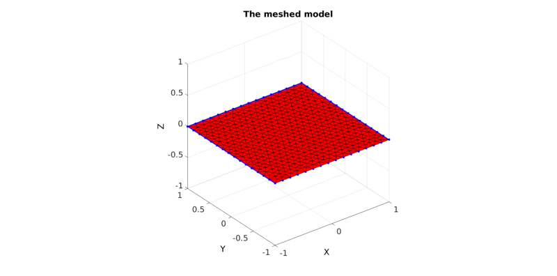
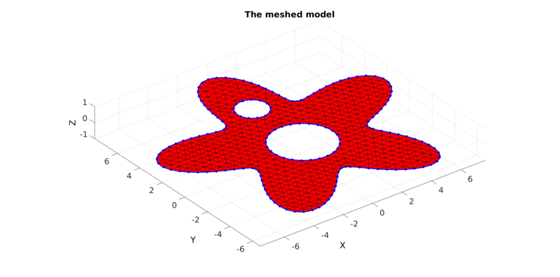

regionTriMesh2D
Below is a basic demonstration of the features of the regionTriMesh2D function.
Contents
clear; close all; clc;
CREATING A REGION MESH
Creating boundary curves
V1=[-1 -1; -1 1; 1 1; 1 -1];
Meshing the region
% The input variable regionCell is a cell array containing all the boundary % curves, e.g. for a two curve region 1 we would have something like % regionSpec{1}={V1,V2} where V1 and V2 are the boundary curves. Multiple % curves may be given here. The first curve should form the outer boundary % of the entire region, the curves that follow should define holes inside % this boundary and the space inside them is therefore not meshed. %Defining a region regionCell={V1}; %A region between V1 and V2 (V2 forms a hole inside V1) plotOn=1; %This turns on/off plotting %Desired point spacing pointSpacing=0.1; [F,V]=regionTriMesh2D(regionCell,pointSpacing,1,plotOn); plotV(V1,'b-','LineWidth',2); axis tight; view(3); drawnow;
CREATING A REGION MESH WITH HOLES
Creating boundary curves
%Boundary 1 ns=150; t=linspace(0,2*pi,ns); t=t(1:end-1); r=6+2.*sin(5*t); [x,y] = pol2cart(t,r); V1=[x(:) y(:)]; %Boundary 2 [x,y] = pol2cart(t,ones(size(t))); V2=[x(:) y(:)+4]; %Boundary 3 [x,y] = pol2cart(t,2*ones(size(t))); V3=[x(:) y(:)-0.5];
Meshing the region
% The input variable regionCell is a cell array containing all the boundary % curves, e.g. for a two curve region 1 we would have something like % regionSpec{1}={V1,V2} where V1 and V2 are the boundary curves. Multiple % curves may be given here. The first curve should form the outer boundary % of the entire region, the curves that follow should define holes inside % this boundary and the space inside them is therefore not meshed. %Defining a region regionCell={V1,V2,V3}; %A region between V1 and V2 (V2 forms a hole inside V1) plotOn=1; %This turns on/off plotting %Desired point spacing pointSpacing=0.5; [F,V]=regionTriMesh2D(regionCell,pointSpacing,1,plotOn); plotV(V1,'b-','LineWidth',2); plotV(V2,'b-','LineWidth',2); plotV(V3,'b-','LineWidth',2); axis tight; view(3); drawnow;

GIBBON www.gibboncode.org
Kevin Mattheus Moerman, gibbon.toolbox@gmail.com